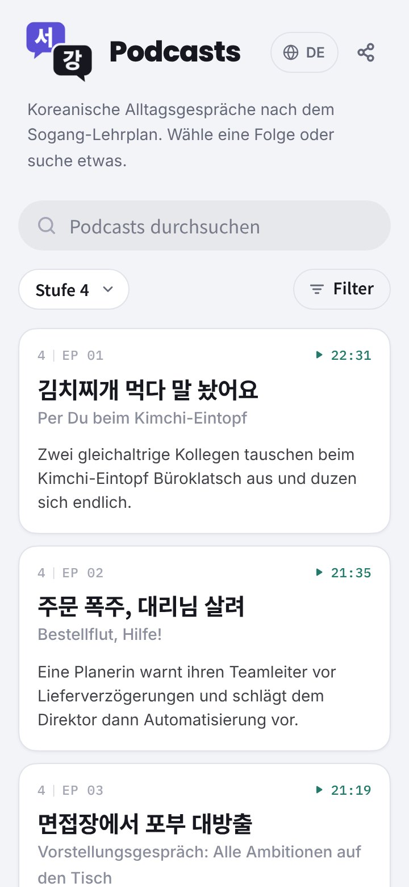
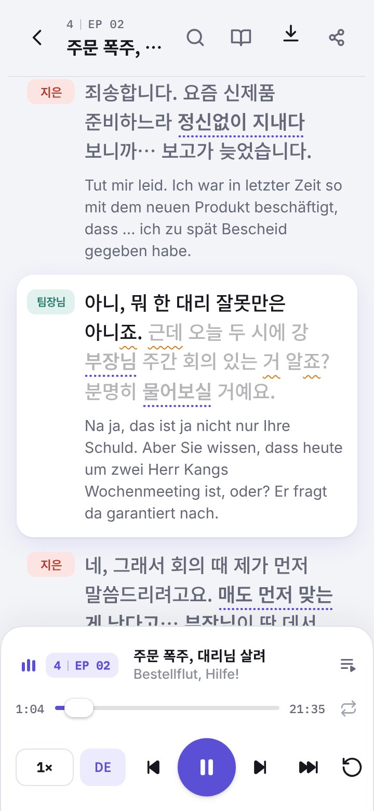
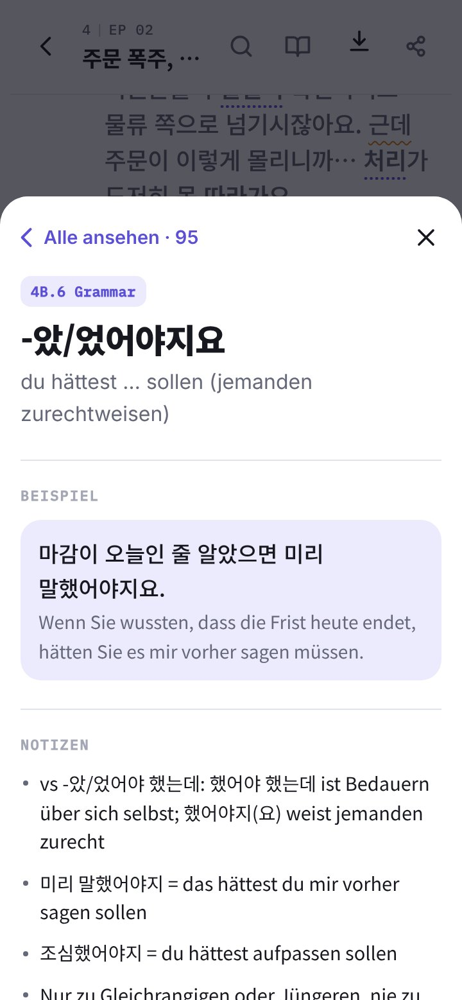
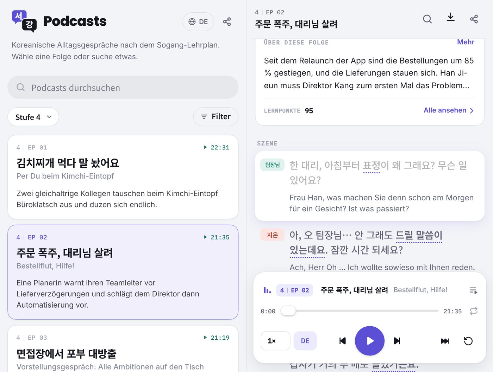
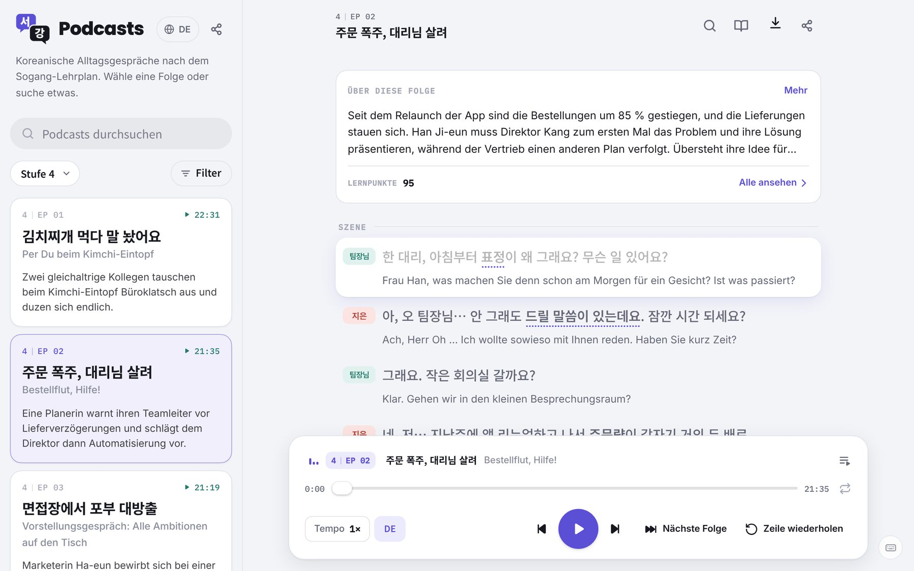
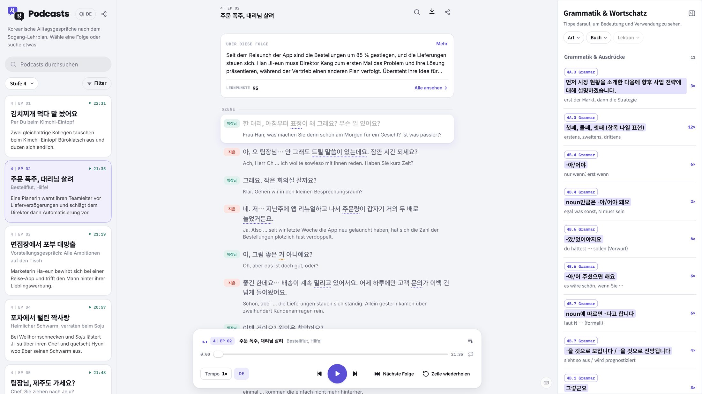

Aus Karteikarten wird ein Podcast
Ein koreanischer Hör-Podcast nach meinem Kurs-Lehrplan. Mit KI vertont, in elf Sprachen lokalisiert und in einer Web-App fürs Shadowing abgespielt.
Die App gebaut, die mir fehlte
Gute koreanische Podcasts und Shadowing-Apps gibt es überall. Keine folgt meinem Sogang-Lehrplan.
Karteikarten liefern immer nur einen Satz, und NotebookLM improvisierte im Muttersprachler-Tempo, mit Vokabeln außerhalb der Bücher. Also habe ich selbst einen gebaut.
Mehrere KI-Modelle orchestrieren
Kein einzelnes Modell konnte eine Folge gut oder günstig schreiben, vertonen und prüfen.
Also ging jede Aufgabe an das Modell, das sie am besten oder am günstigsten erledigt.
UX-Design fürs Shadowing
Beim Shadowing hört man dieselbe Zeile immer wieder, und das ständige Zurückspulen nervt schnell.



Die aktuelle Zeile mit einem Tipp wiederholen.
0,7× bis 1,2×, vom ersten Reinhören bis zum echten Tempo.
Jede Folge merkt sich die Stelle, ganz ohne Anmeldung.
Responsives PWA-Design, vom Handy bis zum Widescreen
Eine Lern-App öffnet man auf dem Bildschirm, der gerade da ist: das Handy in der U-Bahn, das Foldable auf dem Sofa, der Monitor am Schreibtisch.



In elf Sprachen lokalisiert
Meine Klasse kommt aus aller Welt, und englische Untertitel erreichen nur einen Teil davon.
Untertitel und Oberfläche wechseln zusammen. Die App lässt sich auf dem Homescreen installieren und per Link teilen.

Die ganze Geschichte
Das hier ist die Kurzfassung.
Das ganze Projekt, mit den Überlegungen hinter jeder Entscheidung, steht in meinem Case Book. Ich schicke es gern zu oder gehe es gemeinsam durch.
- KI-Voice-Design, getestet an 4.000+ Karten
- Content Design: vom Lehrbuch ins echte Leben
- KI-Stimmdesign: eine Stimme für jede Figur
- QA für koreanische Aussprache
- Review-Ops: ein Sheet, Blocker zuerst
Ein Projekt mit KI-Stimmen oder Sprache? Ich helfe sehr gern dabei.
Die richtige Passform finden
EVN Archive · E-Commerce